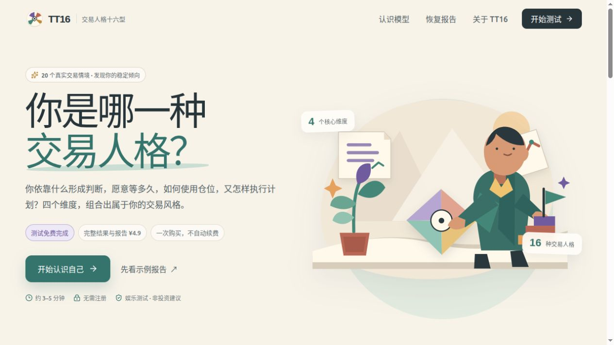

LIVEAVAILABLE FOR COLLABORATION · 2026
把想法做成
能被体验的产品。
我是宋品豪，一名 AI 原生产品开发者。把 Agent、叙事系统与交互设计装进真正能打开、 能试玩、能分享的产品里。
BUILD / TEST / SHIP
SPH
AI × INTERACTION
BEIJING39.9042° N SELECTED
WORK 01—06
06SELECTED PROJECTS
05LIVE EXPERIENCES
01BUILDING PHILOSOPHY
AI AGENTS✦INTERACTIVE STORYTELLING✦
GENERATIVE EXPERIENCES✦OPEN SOURCE✦
AI AGENTS✦INTERACTIVE STORYTELLING✦
GENERATIVE EXPERIENCES✦OPEN SOURCE✦
01 / SELECTED WORK
最近做成的
一些东西
从行为测试、市场信息工具到互动叙事和像素世界。每个项目都包含一个明确的问题、 一套可运行的系统，以及一个可以被真实用户打开的界面。
02 / FIELD NOTES
正在形成的
方法与判断
一些来自真实项目的工作笔记。比起追逐抽象趋势，我更关心怎样把 AI 放进可验证的产品闭环。
NOTE 01AGENT SYSTEMS
让 Agent 成为创作流水线，而不是随机性来源
生成、校验、审查、发布应该是不同的步骤。可控的中间产物，才让 AI 创作从“偶尔惊喜”变成稳定系统。
查看 Narrative Trace 的实践 ↗NOTE 02PRODUCT CRAFT
复杂能力，应该藏在一次简单体验后面
模型、状态机和数据管线可以很复杂，但用户只需要一个清晰的动作、一段及时反馈和一个值得分享的结果。
体验人生火锅 ↗NOTE 03OPEN SOURCE
开源不只是放出代码，也要放出边界
免责声明、数据口径、部署路径和失败模式同样是产品的一部分。让别人知道它能做什么，也知道它不能做什么。
阅读 TT16 项目说明 ↗03 / ABOUT
在模型能力与
人的体验之间。
我是宋品豪，北京理工大学电子信息工程专业本科生。关注 AI Agent、 大语言模型应用与互动内容生成。
我偏爱从一个可以亲手玩的原型开始：先找到最小但完整的体验，再把数据、模型与工程系统逐层接上。 目标不是做一张漂亮的概念图，而是让真实用户能在链接里完成一次体验。
SELECTED RECOGNITION
抖音 AI 创变者计划黑客松青年共振奖
MiraclePlus Vibeathon优秀奖
EARLIER BUILD
StoryWeaver · 长篇网文创作 Claude Code PluginTOOLBOX / 2026
AI & AGENT
Claude Code · Codex · LLM APIs · RAG · Prompt Engineering
ENGINEERING
Python · TypeScript · React · FastAPI · Docker · GitHub Actions
PRODUCT
Prototyping · Interaction Design · Content Systems · Shipping
04 / CONTACT
有一个值得
做出来的想法？
产品合作、开源项目或只是聊聊 AI 原生体验，都欢迎来信。